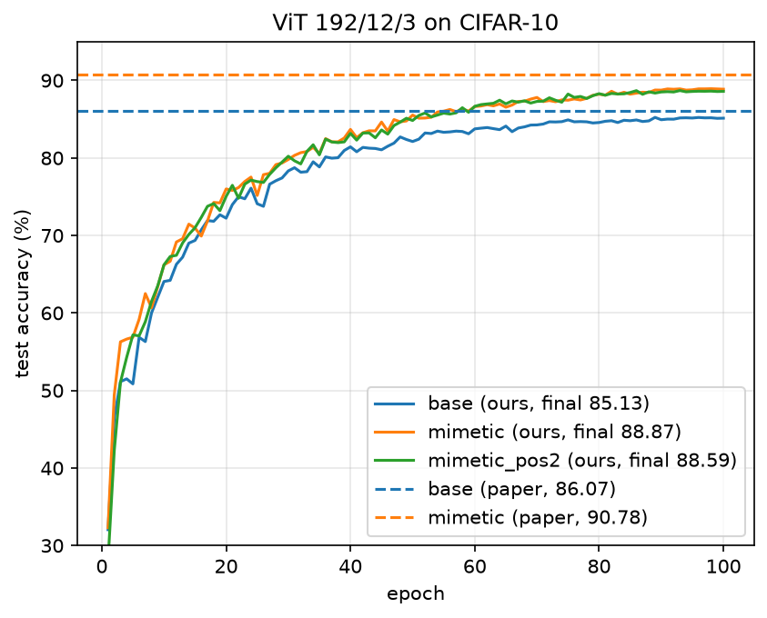
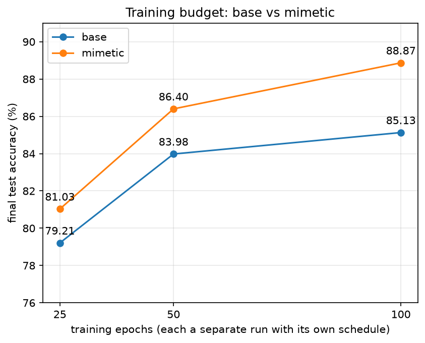

CT-468 Deep Learning, paper reproduction
Trockman and Kolter, ICML 2023. Reproduced on CIFAR-10 with a ViT written from scratch.
Team 404 Not Found
Syed Mohammad Huzaifa, Muhammad Maaz ur Rehman, Shaikh Muhammad Zain
ViTs trained from scratch on small datasets do poorly. In a ViT pretrained on ImageNet, every attention layer shows two diagonal patterns. Mimetic init builds them into the weights before training, in closed form, with no data.
W_Q W_K^T ≈ 0.7 Z1 + 0.7 I
Positive diagonal: a token attends to tokens with similar input, so through the position embeddings to itself and nearby patches. A locality bias like a convolution.
W_V W_proj ≈ 0.4 Z2 - 0.4 I
Negative diagonal: each attention block subtracts part of a token's own value from the residual stream, as in the pretrained layers.
Main claim, ViT 192/12/3 on CIFAR-10: 86.07% to 90.78% (+4.71 points).
2 / 7 · Z1, Z2: random matrices with entries from N(0, 1/d). I: identity.
CIFAR-10: 50,000 train and 10,000 test images, 32 x 32, 10 classes. No validation set.
ViT, width 192, depth 12, 3 heads, patch 2: 257 tokens, 5.34M parameters. Fixed sinusoidal position embeddings.
AdamW, lr 3e-3, weight decay 0.01, batch 512, 100 epochs, RandAugment and Cutout. One T4 on Kaggle, about 2.3 h per run.
5 warmup epochs then cosine decay · RandAugment(2, 9) · Cutout 16 x 16 · random crop and flip · no dropout · float16 mixed precision · seed 0, one run per setting
3 / 7 · Code: model.py, mimetic_init.py, train.py
| Epoch 100 | Paper | Ours | Diff |
|---|---|---|---|
| Base | 86.07 | 85.13 | -0.94 |
| Mimetic | 90.78 | 88.87 | -1.91 |
| Gain | +4.71 | +3.74 | -0.97 |
Our gain is 79% of the paper's. Mimetic also has the smaller train-test gap: 5.93 points against 9.00.

4 / 7 · Test accuracy (%) on the 10,000 CIFAR-10 test images, fixed at epoch 100 before training
Separate 25, 50 and 100 epoch runs, each with its own schedule. Only the epoch count changes.
| Epochs | Base | Mimetic | Gain |
|---|---|---|---|
| 25 | 79.21 | 81.03 | +1.82 |
| 50 | 83.98 | 86.40 | +2.42 |
| 100 | 85.13 | 88.87 | +3.74 |
Mimetic at 50 epochs (86.40) beats base at 100 epochs (85.13).

5 / 7 · One seed per setting. Two otherwise equal mimetic runs differ by 0.28, a rough noise level.
The paper hints CIFAR-10 used a scale other than 1, and its Figure 4 shows about +0.5 from scale 1 to 2. One mimetic run at scale 2: 88.59 against 88.87. Not the cause.
Under-training (flat at the end) · wrong init (self-test diagonals) · attention code (matches by hand) · best vs final epoch (at most 0.1)
6 / 7 · Details: report section 5
+3.74
points from mimetic init on CIFAR-10 (paper +4.71). The claim reproduces.
50 ep
for mimetic to pass base's 100-epoch accuracy. The gain grows with training length.
1-2
points below the paper in absolute accuracy, most likely from settings the paper does not state.
A closed-form initialization with no data and no pretraining gives a large, reproducible gain for small ViTs.
7 / 7 · AI use (Claude, Anthropic) is cited in the report and README